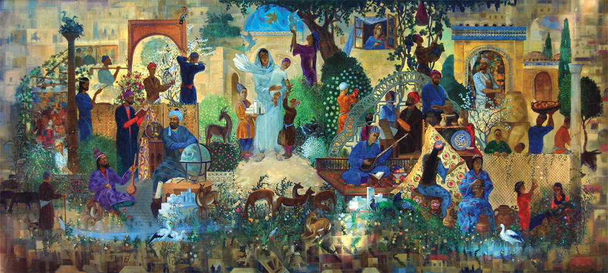
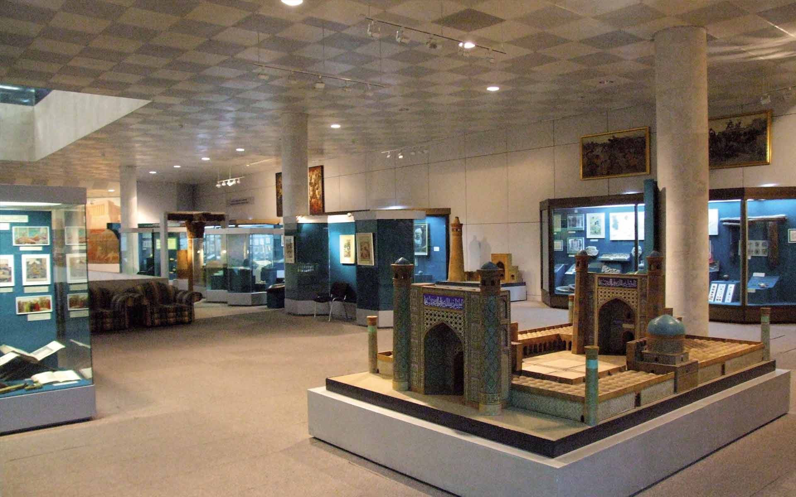
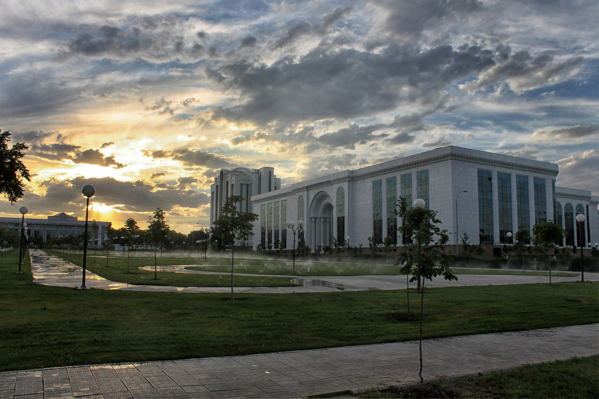

Культура Узбекистана ярка и самобытна, она формировалась в течение тысячелетий и вобрала в себя традиции, обычаи народов, в разное время населявших территорию современного Узбекистана.
Свой вклад внесли в нее древние иранцы, греки, кочевые тюркские племена, арабы, китайцы, русские. Традиции многонационального Узбекистана нашли свое отражение в музыке, танцах, живописи, прикладных искусствах, языке, кухне и одежде. Жители Узбекистана, особенно население сельских областей, чтят традиции, корнями уходящие глубоко в историю края. Особое влияние на культуру Узбекистана оказал Великий Шелковый путь. Будучи торговым маршрутом, он шел из земель Китая в двух направлениях: первое - в Фергану и казахские степи, а второе — в Бактрию, а оттуда — в Парфию, Индию и на Ближний Восток вплоть до Средиземного моря. Шелковый путь способствовал передаче не только товаров, но и технологий, языков, идей, в первую очередь религиозных. Так Великий Шелковый путь способствовал распространению буддизма на территории всей Средней Азии, где вдоль древнего маршрута сохранились памятники буддийской культуры: Аджина-Тепа в Таджикистане, буддийский храм в Куве в Ферганской долине, Фаяз-Тепе близ Термеза в Узбекистане и др.
Музыка и музыкальные инструменты путешествовали вместе с бродячими музыкантами, шедшими с караванами, а знания по изготовлению бумаги, чеканке железных изделий также кочевали из одной страны в другую. Обретение в 1991 году государством независимости способствовало бурному развитию народных ремесел, возрождению узбекских традиций и обычаев, развитию национальной культуры Узбекистана.
Восточные мастера всегда славились своим особым художественным талантом, который в полной мере проявился в отделке и украшениях величественных дворцов, мавзолеев и других культовых зданий. Как правило, основные мотивы узбекского творчества – это орнамент, узор и каллиграфия. Исламские традиции запрещают изображение людей и животных, поэтому мастера принялись развивать более абстрактные направления, доведя их практически до совершенства. Позже появляется новый вид изобразительного узбекского искусства – миниатюра – маленькие яркие красочные картинки, покрытые лаком, украшали интерьеры дворцов и богатых домов. В XIV-XV веках – эпоху правления Тимуридов – во всеобщем культурном подъеме пережило свой небывалый расцвет и узбекское изобразительное искусство. В самаркандских мавзолеях сохранились детали изумительных пейзажных росписей. Некоторые дворцы Амира Темура украшались живописными панно с портретами самого правителя, его жен, сыновей и сподвижников, с богатыми, пиршественными сценами. В это время рождается творчество Камолиддина Бехзода – величайшего художника средневековья, непревзойденного мастера восточной миниатюры.
Новый взлет узбекского художественного искуства приходится на начало XIX века. Искусство миниатюры достигает наивысшего расцвета, его прославляют такие имена как Ахмад Дониш (1827-1897), Абдулхалик-Махмум и другие. На узбекскую живопись XX века большое влияние оказали русские художники-передвижники. Их замечательные работы стали основой для развития восточной школы портретов и пейзажей, развития жанра реализма в живописи. C работами современных мастеров можно ознакомиться посетив Галерею изобразительного искусства - самый современный выставочный зал Ташкента, Музей искусств, богатейшей экспозиции которого положила начало коллекция картин европейской живописи Великого князя Николая Константиновича Романова и многих других арт-галереях и музеях Узбекистана. Любители живописи непременно должны посетить Музей искусств имени И.В. Савицкого в Нукусе, который насчитывает свыше 90 тыс. экспонатов, включая коллекцию русского авангарда, изобразительное искусство Узбекистана, народно-прикладное искусство Каракалпакстана и искусство Древнего Хорезма.
На сегодняшний день в Узбекистане насчитывается 110 различных музеев, 98 из которых, включая филиалы государственных музеев, находятся под руководством Министерства по делам культуры и спорта Республики Узбекистан. Наибольшее количество музеев размещено в Ташкенте. Другие интересные музеи Узбекистана находятся в основных туристических городах, к которым относятся Самарканд, Бухара и Хива. Один из самых знаменитых музеев Центральной Азии - Музей искусств имени И. А. Савицкого - находится в городе Нукусе - столице и административном центре Республики Каракалпакстан.
Все большую популярность в Узбекистане завоевывают арт-галереи и крафт-центры, где пропагандируется узбекское современное и классическое искусство и народные ремесла. В Ташкенте около десятка крупных художественных галерей, где регулярно проходят выставки изобразительного искусства, выставляются старинные предметы народного творчества, антиквариат и другие предметы, являющиеся частью культурного наследия Узбекистана. Арт-студии и галереи открываются и в других крупных городах Узбекистана: Самарканде, Бухаре, Хиве и пользуются большим успехом, как у туристов, так и у жителей Узбекистана.
В крафт-центрах или центрах народного творчества Узбекистана можно увидеть мастерские потомственных ремесленников, где по старинной технологии вручную изготовляются керамика, шелковые ковры, сюзане, ювелирные украшения и аксессуары, кованые изделия, национальная одежда и многое другое, что составляет богатство самобытных национальных ремесел народов Узбекистана.
В основе развития современной узбекской литературы лежит богатый народный фольклор – устное народное творчество. Народом сочинялись и передавались из уст в уста героические эпосы, персонажами которых становились богатыри, боровшиеся против угнетателей и поработителей, изображенных в образах злых сил. Так создавлись эпические произведения узбекского фольклора «Кёр-оглы» и «Алпамыш». Поэма «Алпамыш», повествующая о мужестве и отваге узбекских богатырей, пережила столетия и стала настоящим памятником восточной литературы.
Другим поистине народным произведением стал цикл латифа – баек и сказаний об Афанди – Ходже Насреддине – ловком, остроумном хитреце, который своими проделками преподносит урок жадным богатеям и власть предержащим. В XI веке создается множество произведений, в основу которых положены религиозные нормы исламской морали. Это поучительные поэма «Кугадау Билиг» («Знание о Благодати» или «Наука о Счастье») (1069 г.) Юсуфа Хас Хаджиб Баласагуни (Юсуфа Баласагунского), поэма «Хибат аль-Хакаик» («Подарок истин») Ахмада Югнаки и особенно «Словарь тюркских наречий» (1072-74 гг.), составленный Махмудом Кашгари.
Высокого расцвета художественная литература достигла в историческую эпоху Амира Темура и Темуридов. Популярность ее обоснована тем, что произведения приобретают более светский характер, освобождаясь от излишней религиозности. В этот период творит великий восточный поэт, мыслитель и политический деятель Алишер Навои, которого считают классиком узбекской литературы и основоположником узбекского языка. Его нетленные произведения – «Чордевон» и «Хамса» входят в сокровищницу мировой литературы и переведены на сотни языков мира.
Последний из династии Тимуридов, основатель державы Великих Моголов в Индии, просуществовавшей два столетия, – Захириддин Мухаммад Бабур – был не только талантливым правителем и полководцем, но и прославился как яркий поэт своего времени. Его эпическая поэма «Бабурнаме», в которой, описывая свою биографию, он излагает историю народов Средней Азии, Афганистана и Индии, является шедевром узбекской литературы, ценным историческим и литературным памятником того времени. Узбекская литература XVIII-XIX веков, в основном, лирическая, и посвящена любовной теме. В этот период творят Надира, Увайси, Машраб, Хорезми и многие другие.
В конце XIX и начале XX веков, после присоединения Туркестана к Российской империи начинается новый современный этап узбекской литературы, яркими представителями которой были поэт Мукими и писатель, поэт и сатирик Фуркат. В начале XX века и в советскую эпоху расцветают такие таланты, как поэт и драматург Хамза Хакимзаде Ниязи, поэт и писатель Садриддин Айни, репрессированные при Сталине первый узбекский романист Абдулла Кадыри и писатель и философ Фитрат, чьи литературные традиции были продолжены Ойбеком, Гафур Гулямом, Абдулла Каххаром, Xамид Алимджаном, Уйгуном и другими.
Традиционная узбекская музыка имеет древние истоки. Фольклорная узбекская музыка, музыка из народа, подразделяется на множество жанров. Среди них колыбельные и детские песни, обрядовые, трудовые и бытовые песни, песни-диалоги, песенно-танцевальные, лирико-протяжные.
Узбекские музыканты, узбекская музыкаУзбекские музыканты, узбекская музыкаУзбекские музыканты, узбекская музыка Классика узбекской музыки – это макомы – особый музыкальный жанр, которому свойственно протяжное трогательное исполнение. Их поют лирические певцы на стихи поэтов Востока (Джами, Навои, Фузули, Хафиза, Увайси, Надира, Мукими, Огахи и др.). ЮНЕСКО включила «шашмаком» традиционную музыку Узбекистана и Таджикистана в список шедевров устного и нематериального культурного наследия человечества.
Говорит о богатстве узбекских музыкальных традиций и разнообразие народных инструментов: струнно-смычковые – гиджак, кобуз, сетор и сато; струнно-щипковые – домбра, дутар, танбур, уд и рубаб; струнно-ударный чанг; духовые язычковые – сибизик, буламан, сурнай и кошнай; духовые флейтовые – най и гаджир-най; медные духовые – карнай; ударные – дойра, нагора, чиндаул, сафаиль, кошук и др.
Декоративно-прикладное искусство Узбекистана – это самобытное и эксклюзивное творчество народных мастеров, ремесленников, передающих свое умение из поколения в поколение. Вкладывая в каждую вещь частичку души, они на протяжении веков создавали уникальные образцы изделий: будь то утварь для дома или украшение жилища, неповторимая ткань для праздничного платья или особая посуда. Узбекские народные ремеслаУзбекские народные ремеслаУзбекские народные ремесла Творения ферганских, самаркандских, бухарских, хивинских и других мастеров издавна славились далеко за пределами родины и продолжают вызывать интерес у любителей прекрасного со всего мира. Разнообразные школы вышивки сюзане и керамики, тюбетейки самого разного вида и предназначения, национальные ножи-пичаки на каждый случай, шелковые и шерстяные ковры, шелк и чеканка - чудесные работы, вот уже многие века создаваемые руками местных мастеров и мастериц составляют неповторимую экзотику Узбекистана.
На территории Узбекистана в течение веков формировались своеобразные центры и школы народных художественных ремесел. У каждого региона свое направление. Наманганский Чуст широко известен своими тюбетейками и ножами, ферганский Риштан - лазурной керамикой, древний Маргилан - радужно переливающимся атласом, священная Бухара - золотым шитьем. Декоративно-прикладное искусство Узбекистана развивалось из века в век, оставляя в наследство уникальные изделия известных и безымянных мастеров, поражающие богатством художественной фантазии и совершенством форм.
Мужской и женский национальный костюм. Узбекские тюбетейки Узбекские национальные костюмы очень яркие, красивые, удобные и являются частью богатых культурных традиций, образа жизни народа. В городах уже редко можно встретить людей в национальной одежде, сегодня ее надевают на традиционные праздничные мероприятия, но в сельской местности она все еще служит частью как повседневного, так и выходного наряда.
Узбекская мужская одежда
Основу национального мужского костюма составляет чапан - стеганый халат, который подвязывается поясным платком - кийикча. Традиционный головной убор – тюбетейка. На тело одеваются куйлак - нижняя мужская рубаха прямого покроя, и иштон - широкие шаровары, которые сужаются к низу. Ноги обувают в сапоги из тонкой кожи. Пояса в парадной одежде часто очень нарядные - бархатные или вышитые, с серебряными узорными бляхами и пряжками. Повседневный куйлак подпоясывали длинным шарфообразным кушаком.